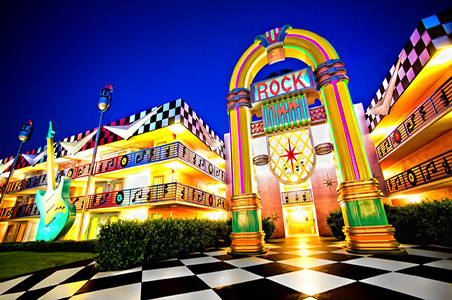

Disney Springs
Disney Springs, antigamente chamada de Downtown Disney é um centro de compras, restaurantes, teatro e outros tipos de entretenimento localizado no complexo Walt Disney World.
O lugar ideal para se divertir, com qualidade o tempo todo!
Lojas
Roupas e acessórios, Arte e colecionáveis, Câmera e mídia, Comidas e bebidas, destiladas Presentes e utilidades domésticas, Saúde e beleza, MagicBands, Orelhas do Mickey, Bótons e Vinylmation, Brinquedos e pelúcias.
Restaurantes
Culinária americana, Culinária Asiática, Culinária Cubana, Culinária Irlandesa, Culinária Italiana, Culinária Japonesa, Culinária Latina, Culinária Mexicana, Frutos do mar, Steakhouse e Sushi.
Entretenimento
Concertos, Entretenimentos ao vivo, Shows no palco e Teatro
Atividades
Aerófilo o líder Mundial em voo de balão e MarketPlace Carrossel
Nossos 4 Parques Temáticos
Explore terras de encanto sem fim, onde sua fantasia se torna realidade
Magic Kingdom Park
O Magic Kingdom Park é o parque temático onde se localiza o fabuloso castelo das princesas da disney, onde tem diversas atrações com o foco nos principiais personagens da disney e suas princesas.
Epcot
O Epcot é o parque temático chamado de "Feira do mundo permanente", onde tem diversas atrações que exploram a inovação tecnológica e a cultura internacional.
Disney's Hollywood Studios
Disney's Hollywood Studios é o parque com o foco nos grandes sucessos e apresentações da disney no cinema, tendo o parque mais recente inaugurado "Toy Story Land".
Disney's Animal Kingdom
Disney's Animal Kingdom é o parque com o foco nas suas atividades e exibições voltadas para o mundo animal e nas aventuras de seus sucessos do mundo animal e "mítico" como avatar e jurassick park.
Nossos 2 Parques Aquáticos
Disney's Typhoon Lagoon
Disney's Typhoon Lagoon é o parque aquático com um tema tropical e praiano onde tem uma praia artificial com piscina de ondas artificiais grandes suficientes para que as pessoas consigam surfar com tranquilidade, também no ambiente tropical do park há um rio bem "tranquilo e calmo".

Disney's Blizzard Beach
Disney's Blizzard Beach é o parque aquático com um tema de um resort de esqui com toboáguas enormes e uma montanha de neve artificial simulando um ambiente gélido e frio, com diversos tobogãs enormes e com area para crianças pequenas poderem se divertir sem preocupações.
Sobre
Os sonhos existem para tornarem-se realidade - Walt Disney
17 de Julho - 1955
Inauguração da Disneyland
Começou em 1967 até 1971
A construção do Magic Kingdom
1º de Outubro de 1982.
O próximo parque a ser inaugurado foi o Epcot
E em 22 de Abril de 1998
Foi inaugurado o Animal Kingdom.
Disney All-Star's Music
Deixe-se levar pelo ritmo neste hotel resort que homenageia alguns dos gêneros musicais mais populares do mundo, incluindo country, jazz, rock 'n' roll, calypso e músicas de shows no estilo da Broadway.
